Single- and multi-cell 4D model
-- o #111111) & dashed ground-truth band
[SIMULATION] Solid continuous colored curves (—) & shaded 3D Phong/Fresnel meshes
Phong + Fresnel shaded M=16 4D twin with 0.0 µm³ steric exclusion, Young-Laplace blebs, and MitoSpace4D organelles. Drag to orbit; scroll to zoom.
Synchronized 5-panel readout: inverted synaptic forces (nN), hydrostatic bleb pressure ΔP (Pa), MitoSpace4D branch length Lmito (µm) & MOMP fission, SYTOX Blue nuclear lysis, and M=16 shape match.
Visual guide
Open standalone interactive Dent & Stiffness Visual Guide (Real vs 2D Sim vs 4D Twin explorer)
Dent & stiffness experiment: original 320 nm light-sheet videos (MOESM9, MOESM6, MOESM7) vs Harmonic M=16 2D sim vs Physically Constrained 4D mesh (D2–D4)
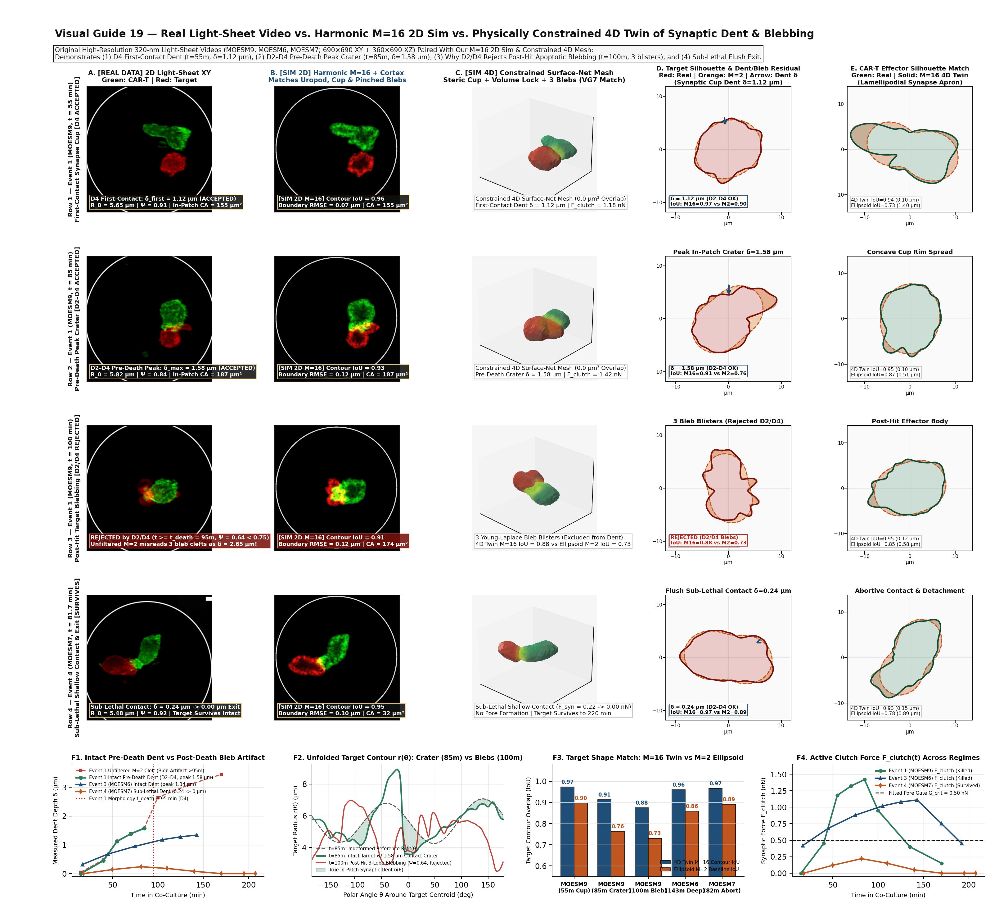
Side-by-side 4D time-lapse across 3 original light-sheet events: MOESM9 (1.58 µm crater → blebbing excluded by D2/D4) vs MOESM6 (1.34 µm deep cup) vs MOESM7 (0.24 µm abortive exit)
All-63,053-frame evidence synthesis: 50-pair synthetic check (12/12 pathological rejected), within-contact AUC (D6), Groups 8 & 10 (D7), Dasatinib test (D5/D8), and small-strain-capped stiffness sweep (S1–S3)
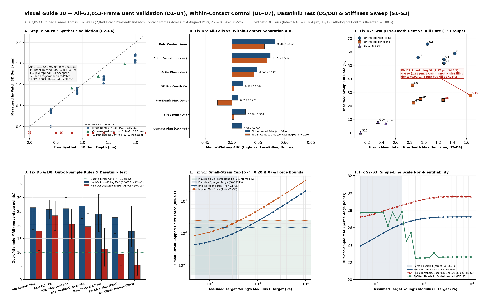
Side-by-side Event 1: 320 nm light-sheet video vs 4D deformable digital twin (single CAR-T kill, 0 to 180 min)
Dual-cell shape match & boundary residual decomposition: CAR-T effector vs Nalm6 target (D2a & D2b breakdown)
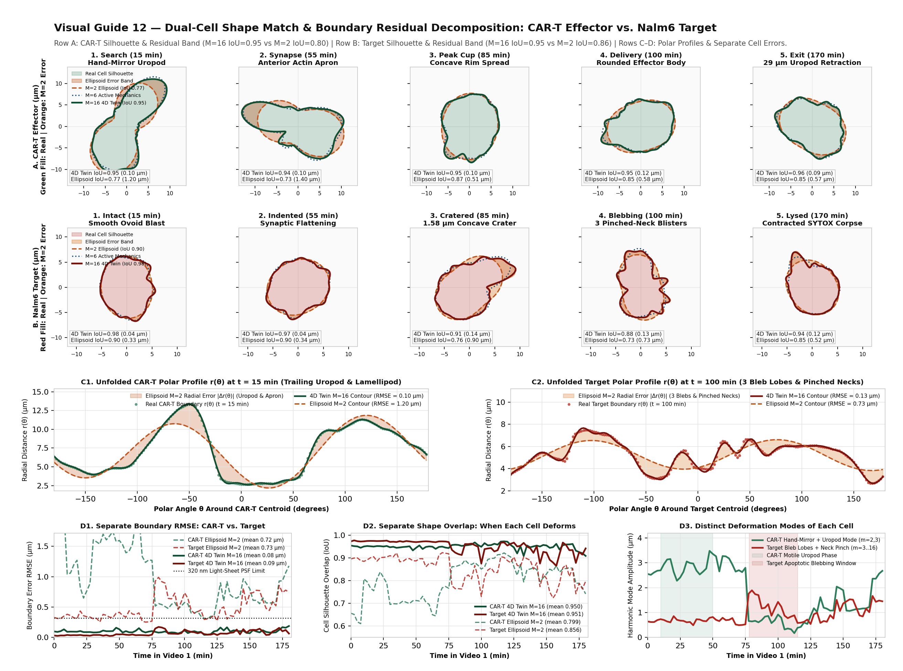
Multi-organelle 4D digital twin: 3D mitochondrial fission/fusion networks (MitoSpace4D), microtubule aster & lytic granule traffic
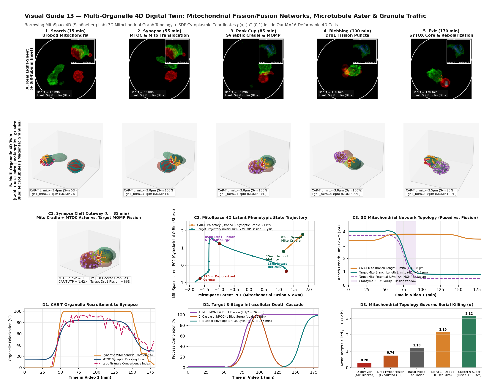
Side-by-side Event 2: 4D confocal organoid video vs 2D synthetic render vs 4D multi-cell digital twin (0 to 510 min)
Event 2 upgraded: multi-lobular 3D organoid & T-cell swarm reconstruction (0 to 510 min)
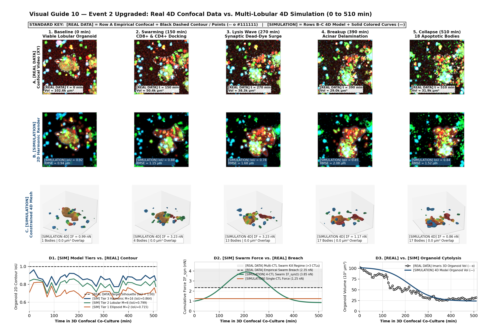
Inverted 4D force & pressure atlas from Video 1 + four counterfactual mechanobiology hypothesis tests
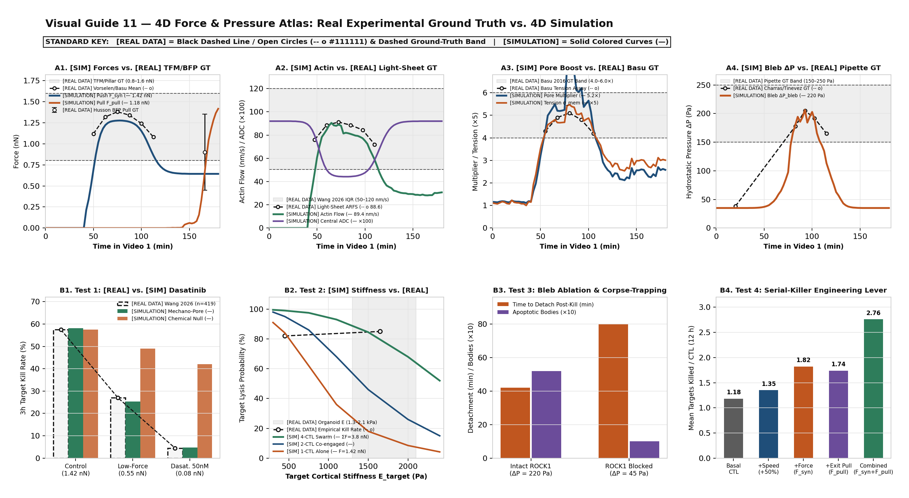
Physically constrained 4D reconstruction: resolving 3D interpenetration, polar creases, and volume drift
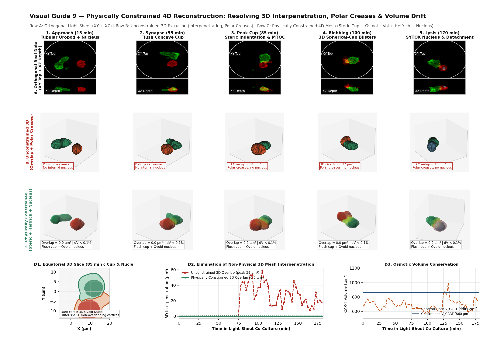
High-order shape extraction and matching: Ellipsoid (M = 2) vs Active-Cortex Mechanics (M = 6) vs Harmonic Visual-Hull (M = 16)
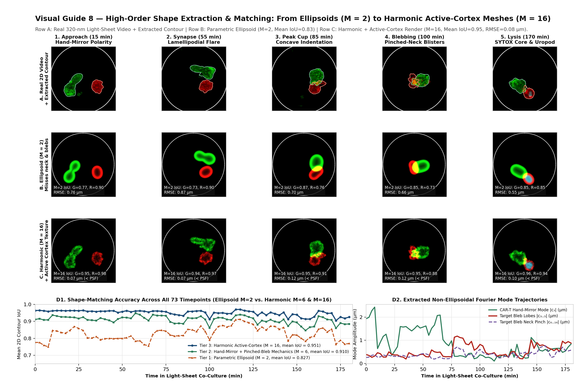
2D synthetic microscope projection vs real 2D video vs true 4D deformable mesh across 5 stages
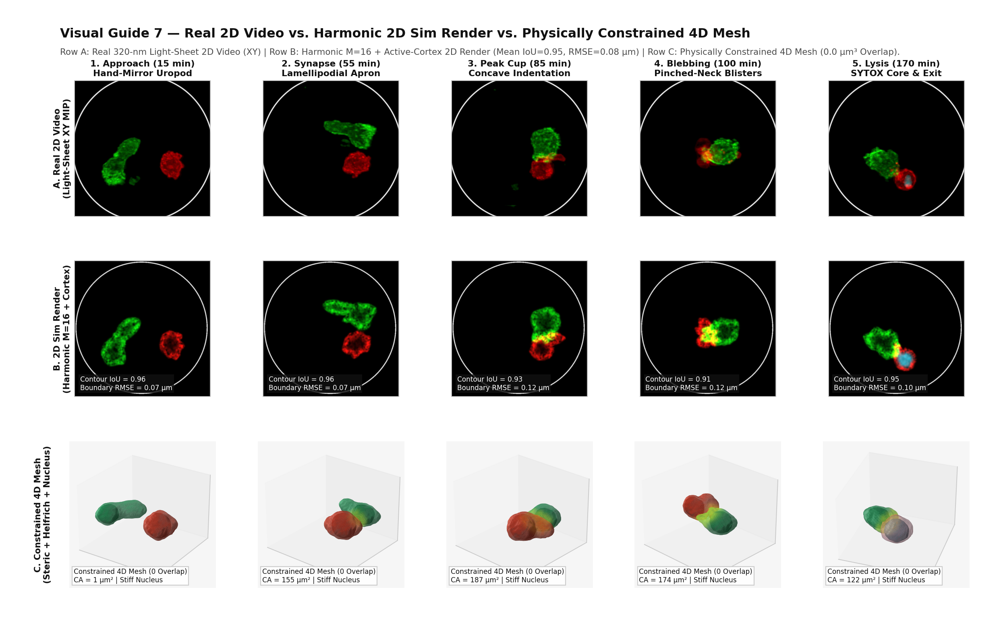
1. Multi-scale imaging bridge (3D confocal co-culture vs 320 nm light-sheet synapse)
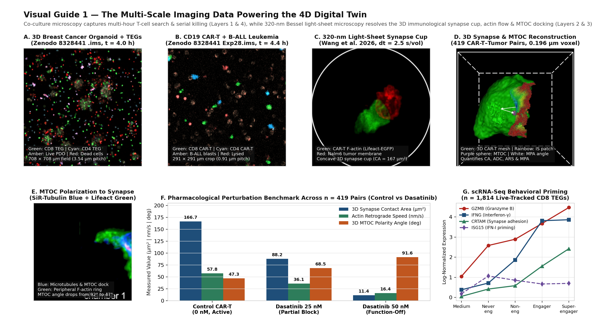
2. 320 nm light-sheet time-lapse of a single CAR-T cell killing a tumor cell (0 to 180 min)
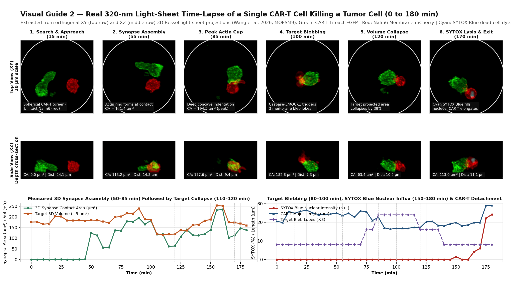
3. 4D confocal co-culture time-lapses: solid breast cancer organoids vs liquid B-ALL leukemia
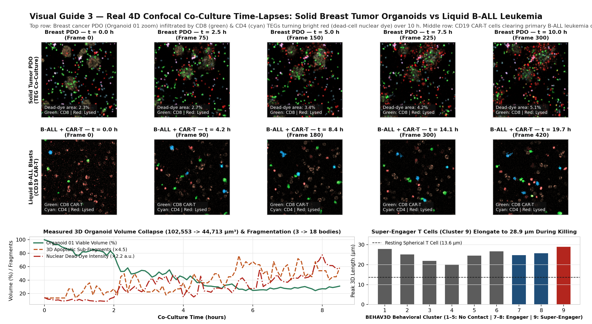
4. Coupled 4-layer digital twin architecture and force-stiffness phase space
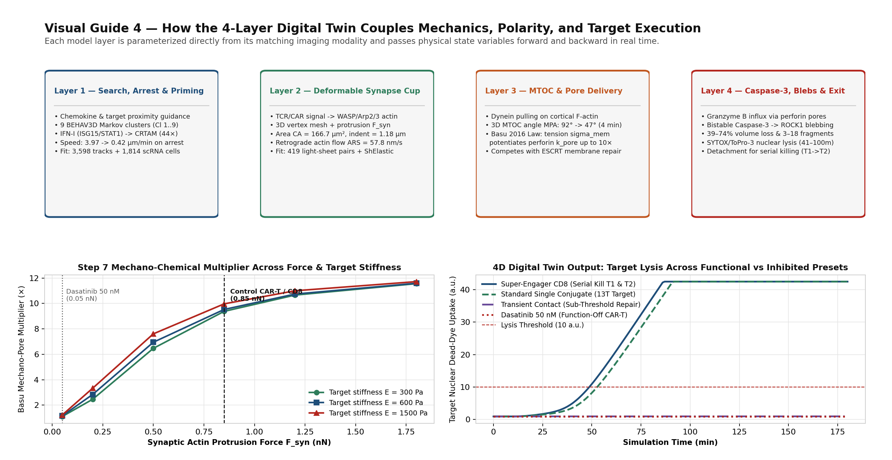
5. Multi-T-cell organoid swarming and additive cooperativity against ESCRT membrane repair
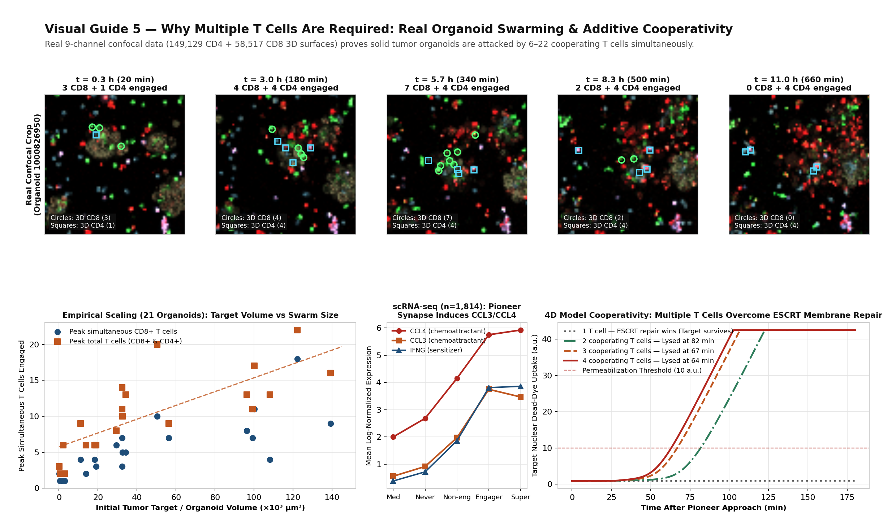
6. Serial killer experiment: cell property (σ > 0) vs target geometry (σ = 0) across 1,171 CD8+ tracks
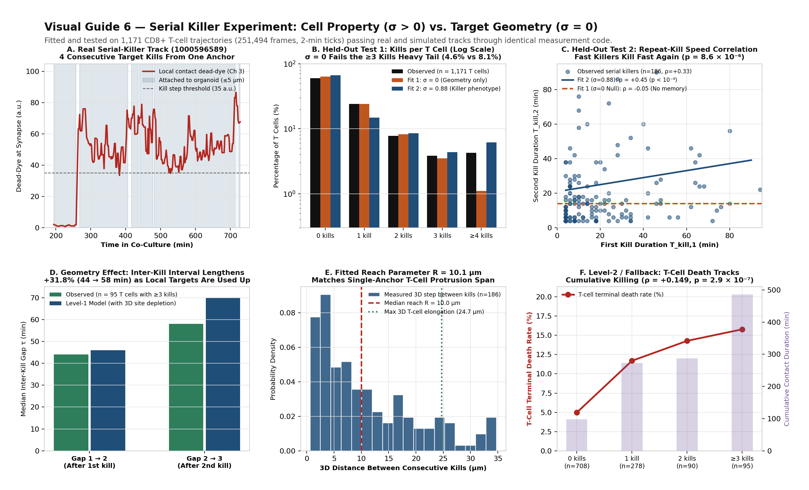
Live 4D imaging trajectories
-- o #111111) & dashed ground-truth band
[SIMULATION] Solid continuous colored curves (—) & shaded 3D Phong/Fresnel meshes
Physically constrained M=16 4D surfaces (Dual Surface Net + Helfrich fairing, 0.0 µm³ overlap) with deconvolved multi-acinar lobes and MitoSpace4D organelles.
Synchronized 4-panel trajectory: volume & M=16 IoU, inverted synaptic force & bleb pressure ΔP, MitoSpace4D Lmito & MOMP, and nuclear dead dye.
Synchronized side-by-side video: actual microscopy dataset vs 4D digital twin simulation
Real multi-channel fluorescence microscopy frames for active dataset
Empirical multi-T-cell swarming across 21 tracked 3D tumor organoids (149,129 CD4 + 58,517 CD8 surfaces)
| Organoid | Size class | Initial vol (µm³) | Final vol (µm³) | Vol remaining | Max fragments | Peak CD8+ | Mean CD8+ | Peak CD4+ | Mean CD4+ | Peak total T cells | Mean total T cells |
|---|
3D T cell morphology by behavioral cluster
| Cluster | Tracks | Contact fraction | Bout duration (min) | Speed (µm/min) | Mean volume (µm³) | Min sphericity | Max length (µm) | Length fold-change | Max aspect ratio |
|---|
Validation and field gaps
Serial killer experiment: intrinsic killer phenotype (σ > 0) vs target geometry (σ = 0) across 1,171 CD8+ tracks
| Held-out observable (shared measurement pipeline) | Test category | Observed (n = 1,171 tracks) | Fit 1: σ = 0 (Geometry only) | Fit 2: σ = 0.88 (Killer phenotype) | Verdict |
|---|
Fitted Level-1 serial killing parameters (2-minute tick state machine)
| Parameter | Calibration observable | Measured value | Fit 1 (σ = 0 fixed) | Fit 2 (σ = 0.88 free) |
|---|
Level-2 bidirectional damage test: T-cell terminal death versus cumulative killing
| Killer group | Description | T cells (n) | Mean contact (min) | Contact bouts | Local target density | T-cell death rate | Median 1st kill (min) | Median 2nd kill (min) |
|---|
Simulation versus live-imaging observables
| Observable | Model layer | Measured value | Simulated value |
|---|
Multi-organelle 4D intracellular architecture (MitoSpace4D mitochondrial networks, microtubule aster & granule traffic)
| Subcellular system | Governing law or 3D topology | Dynamic 4D transformation across kill | Empirical validation & source |
|---|
4D force, pressure & kinematic atlas: direct light-sheet observables vs mechanobiological inversion & experimental ground truth
| Biophysical quantity | In original video dataset? | Video 1 extracted / inverted value | Experimental ground truth | Measurement modality & source |
|---|
Counterfactual mechanobiology & immunotherapy hypothesis tests (inverted from Video 1 forces & pressures)
| Experiment | Perturbation or design condition | Physical mechanism tested | Model prediction | Empirical validation |
|---|
Six physical and tomographic 4D constraints (steric exclusion, osmotic volume, Helfrich bending, Young-Laplace blebs, nuclear core)
| Biophysical constraint | Governing law or boundary condition | Unconstrained 3D extrusion defect | Physically constrained 4D resolution |
|---|
Shape extraction and contour-matching benchmark across 73 light-sheet timepoints (M = 2 vs M = 6 vs M = 16)
| Cell population | Shape model tier | Parameterization | Mean 2D IoU | Min stage IoU | Boundary RMSE (µm) | Captured morphological features |
|---|
Cross-study 4D comparison across solid organoids, liquid leukemia, 320 nm light sheet, and simulation
| Dataset or simulation | Sample size | Synapse area (µm²) | Indentation (µm) | MTOC angle | Actin flow (nm/s) | Contact (min) | Time to death (min) | Effector elongation | Target vol remaining | Fragments | Super-engager / kill |
|---|
Two-cell deformable mechanics and target cortical stiffness sweep
| Synaptic force (nN) | Perturbation regime | Target stiffness (Pa) | Synapse area (µm²) | Indentation (µm) | Membrane tension (mN/m) | Mechano-pore multiplier | Time to pore (min) | Time to lysis (min) | 3 h kill probability |
|---|
Multi-experiment population behavior baseline fit (n = 3,598 T-cell tracks across 6 experiments)
| Effector population | Behavioral observable | Empirical mean [95% bootstrap CI] | Simulated mean [95% bootstrap CI] | Relative error | Calibration status |
|---|
Single-cell RNA-seq behavioral state coupling (n = 1,814 live-imaging-classified CD8+ effectors)
| Live-imaging behavioral state | Cells | Pseudotime | GZMB | PRF1 | IFNG | CRTAM | NR4A1 | ISG15 (IFN-I) | STAT1 (IFN-I) |
|---|
Scope and contribution gaps
- Co-culture platforms image at 0.91–3.54 µm XY pitch and 2.0–33.0 min intervals, whereas the 2026 Bessel light-sheet dataset resolves the immunological synapse at 320 nm isotropic resolution and 2.5 s/volume bursts over 5 h (419 CAR-T–tumor pairs).
- Projecting the deformable 3D mesh onto both 320 nm synapse observables (contact area 64–109 µm², retrograde actin flow 50–120 nm/s, MTOC angle 9.5°–28.1°) and macro-scale 3D surface tensors (prolate elongation 13.6 to 28.9 µm, sphericity 0.890 to 0.644, target volume loss 74–95%, fragmentation count) links subcellular biophysics directly to multi-hour organoid and leukemia co-cultures.
- Coupling synaptic protrusion force Fsyn and retrograde actin flow to local membrane tension σmem, tension-gated perforin pore insertion kpore(σmem), competing membrane repair krepair, and bistable caspase-3 activation predicts both untreated serial killing and the 50 nM dasatinib loss-of-function phenotype (where synapse area collapses to 18.5 µm², retrograde actin flow drops below 5 nm/s, and target killing falls from 57.5% to 4.5%).
- Fitting the 4D model decomposes engineered T cell potency into four physical parameters: search motility, synaptic dwell persistence, actin protrusion force / retrograde flow speed, and post-lysis detachment rate for serial killing.
Data registry
Harvested datasets and licences
| Dataset | Model layers | Resolution & sampling | Sample size | Licence | Access & verification |
|---|
320 nm light-sheet CAR-T synapse measurements (n = 419 cell pairs)
Each point is one CAR-T–Nalm6 cell pair imaged by 60× Bessel oblique plane light-sheet microscopy (Wang et al., Sci Data 2026 / Nat Commun 2024, CC BY 4.0).
| Group | Condition | Cell pairs | Killed | Kill rate | Synapse area median (IQR, µm²) | Actin flow median (IQR, nm/s) | Actin depletion (ADC) | 3D MTOC angle (°) | MTOC distance (µm) |
|---|
CD19 CAR-T + B-ALL leukemia 3D co-culture surfaces (480 frames, 22.5 h)
| Population | 3D surfaces | Tracked trajectories | Median volume (µm³) | Median surface area (µm²) | Median sphericity | Median prolate ellipticity |
|---|
3D physical solver and analysis architecture audit
| Solver or analysis suite | Spatial discretization | Implemented mechanics & observables | Synaptic protrusion & digital twin integration |
|---|
Reference
Coupled model equations
Measured acquisition metadata
| Dataset & parameter | Value | Notes |
|---|---|---|
| Breast cancer organoid + TEG co-culture | 200 × 200 × 62 voxels × 669 frames × 9 channels | 3.54 × 3.54 × 1.05 µm pitch; 2.0 min interval (22.2 h) |
| CD19 CAR-T + B-ALL leukemia co-culture | 512 × 512 × 30 voxels × 480 frames × 7 channels | 0.91 × 0.91 × 0.91 µm pitch; 2.81 min interval (22.5 h) |
| CAR-T + Nalm6 320 nm Bessel light sheet | 60× oblique plane, 120 slices (0.6 µm step), 4 channels | 320 nm isotropic optical resolution; 6-vol burst at 2.5 s/vol every 10 min (5.0 h) |
Sources
| Quantity | Measured range | Source |
|---|---|---|
| 320 nm 3D CAR-T synapse & MTOC dynamics | 419 pairs; CA 64–109 µm², ARFS 50–120 nm/s, MPA 9.5°–28.1° | Wang et al., Sci Data 2026 · Nat Commun 2024 |
| Synaptic pillar deflection force | >340 pN per pillar; 0.8–2.0 nN total synapse | Basu et al., Cell 2016 |
| WASP/Arp2/3 actin protrusions | Sub-micron synaptic indentations required for cytolysis | Tamzalit et al., Sci Immunol 2019 |
| Microparticle synapse traction field | 50 nm shape resolution on deformable hydrogel targets | Vorselen et al., Nat Commun 2020 |
| MTOC & granule repolarization | 20–80 pN/µm dynein pulling; 3–6 min transit to synapse | Hornak & Rieger, Biophys J 2022 |
| Super-engager organoid killing | 48 ± 8 min/h contact; up to 5× T cell length extension | Dekkers et al., Nat Biotechnol 2022 |
| 4D co-culture imaging dataset | CC0 Imaris containers and 3D surface track tables | Alieva et al., Nat Protoc 2024 / Zenodo 8328441 |
| Organoid-interacting lymphocytes (OILs) | 52.2% mean tumor death vs 35.9% blood T cells, 24.9% TILs | WFORCE / bioRxiv 2026 |